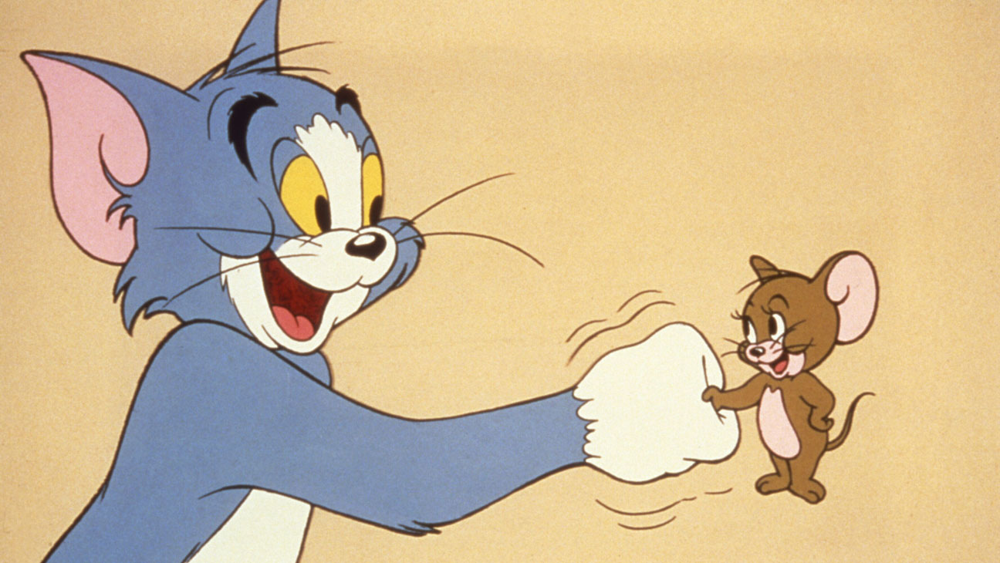

42+1
Одного разу Джеррі втомився тікати, тож вирішив піти до Тома і домовитись про перемир'я. Том дуже цьому зрадів, адже миша сама прийшла до кота і вирішив запропонувати мирний обід, на якому вони забудуть про всі яблука роздору і закопають топор війни а після він зможе розправитись з своїм нічого не підозрюючим ворогом. Джеррі вирішив не ризикувати і попросив Тома на обід піти в Макдональдс і замовити там 43 куриних крильця. Том так ніколи і не повернувся. Джері продовжив бешкетувати, їсти сир і радіти життю, знаючи що його більше не спробують схопити.
А все через те, що найкращий друг Джеррі це Фердінанд Фробеніус і він знає про таємне число Фробеніуса. Число Фробеніуса - це найбільше число, яке не можна представити у вигляді суми двох інших чисел зі спільним дільником 1. Давайте зупинимось на цій фразі трохи детальніше.

Уявімо що ми як і Джеррі знаємо що крильця йдуть в порціях 5 і 9 штук. Їх спільний дільник 1. З цих двох чисел ми не можемо скласти 7,11,13,16 і ще купу чисел. Їх всіх можна легко знайти методом перебору. Математик Джеймс Джозеф Сільвестр задався питання чи таких чисел є безмежна кількість. Формула Фробеніуса дозволяє нам знайти таке число,після якого ми можемо показати у вигляді суми наших чисел будь яке інше число. Ця формула виглядає як (x*y)-x-y, де x i y наші задані числа.
Оскільки ми вже вміємо писати найпростішу програму на пайтоні, давайте напишемо невеличку програму, що буде рахувати нам число Фробеніуса для будь яких заданих х і y.
І перша проблема з якою ми зустрінемось буде введення чисел в нашу програму. Звичайно ми можемо присвоїти значееня нашим змінним і потім з ними працювати,але якщо нам захочеться працювати не з 5 і 9 доведеться переписувати програму, а потім знову і знову і знову. Хотілось б мати функцію, що дозволяє нам отримати значення від людини що запустила нашу програму(користувача). І в пайтоні вона вже існує - це функція input.Вона призупиняє виконання програми і чекає, доки користувач введе деякий текст. Отримавши дані, Python зберігає їх у змінній, щоб вам було зручніше працювати з ними.
Ця функція завжди повертає нас стрічкове значення. Що ж воно таке і як нам отримати з нього
цифру? Що ж, кожна змінна в мові пайтон може належати до деякого типу даних, ось деякі з
них:
- int – цілі числа(-1, 0, 1000003424, 6)
- float – дійсні числа(4.8, 15.16, -23.42)
- str – Unicode-рядки;("Hello world", "Привіт", "8")
- bool - логічний тип даних(true,false)
У мові пайтон використовується динамічна типізація, тому нам не треба писати int example=8. Змінна example автоматично набуде типу int. Якщо ж ми присвоїмо їй після цього значення іншого типу, тип змінної також зміниться автоматично. Для того щоб визначити тип змінної можна скористатись функцією type. Розглянемо приклад: